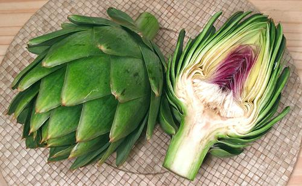

Green Globe Artichoke

[Cynara scolymus]
The dominant artichoke in North America, the Green Globe is grown in
Monterey County on the central coast of California. The harvest begins
in March and continues well into May with a smaller harvest in
September and October. Sizes range from 18 count (jumbo) through 60
count, plus "large loose" (cocktail) and "small loose" (baby) sizes.
The "count" is for a 22 to 24 pound case.
The Green Globe is a perennial crop and fairly expensive to produce
so attempts to replace it with lower cost annual varieties growable in
other parts of California are being made - so far with less than fully
satisfactory results.
More on Thistles
Cooking:
Simple is best, but fancy chefs have come up
with hundreds of recipes for stuffing them, and sauces that mask their
flavor. A waste of time in my opinion - but that's what fancy chefs get
paid for. For a nice simple approach, see our recipe for
Steamed Artichokes
Buying:
Select artichokes that are heavy for their size
and have firm green leaves. Reject any that have splayed, dry, split,
pitted or brown tipped leaves. Artichokes with frost or wind burn may
not look as good but be otherwise fine. For a photo of one in this
condition, see our Thistles
page.
Storing:
Fresh artichokes will keep in a cool place
for a day or two, and up to a week loosely bagged in the fridge. Wet
the stem for storage, but not the rest of the artichoke.
Prep:
If your artichoke has sharp thorns, cut off the
top 1 inch with a very sharp knife. Then cut off just the tips of the
large exposed leaves with thorns with kitchen shears. Don't forget
to apply lemon juice to cuts to prevent browning.
dy_artiglbz 190407 - www.clovegarden.com
©Andrew Grygus - agryg@clovegarden.com - Photos
on this page not otherwise credited © cg1
- Linking to and non-commercial use of this page permitted